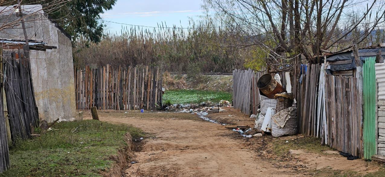
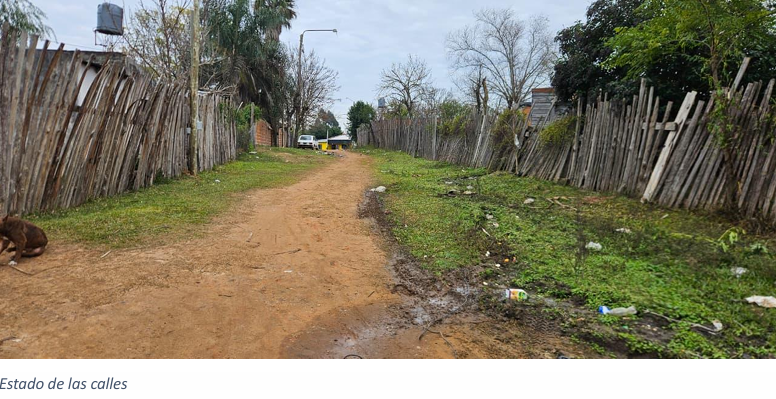
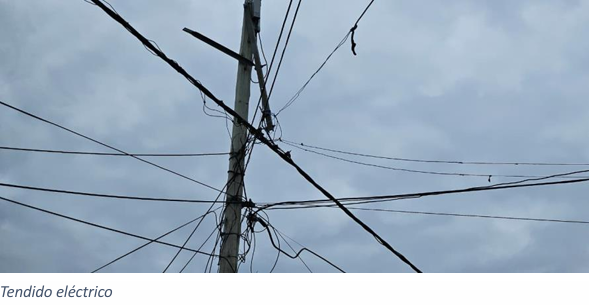
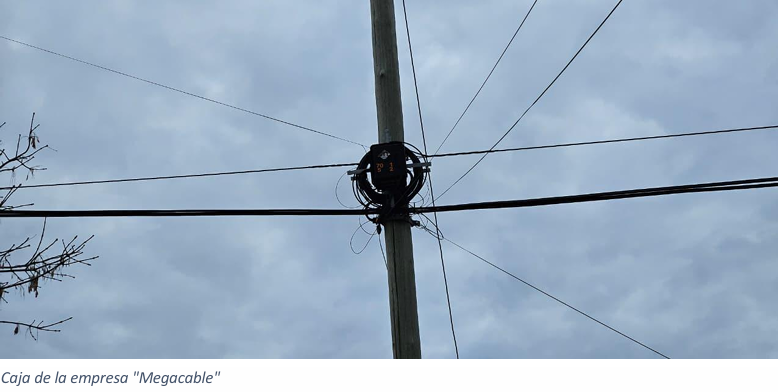
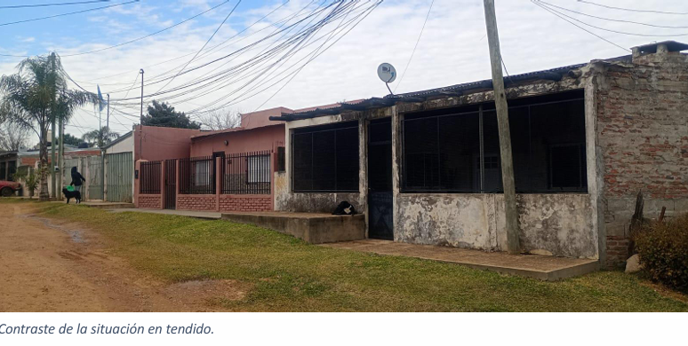
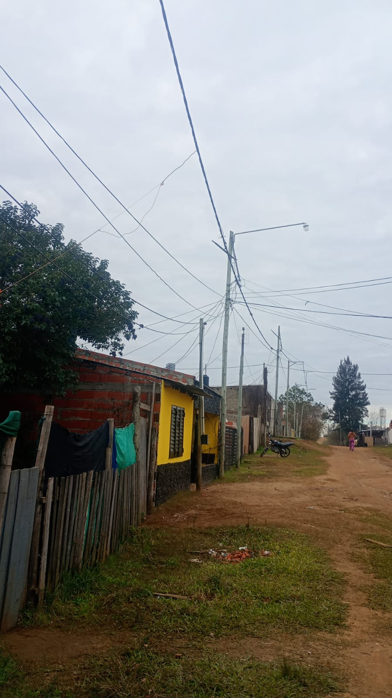

Relevamiento — Barrio La Colina
Cooperativa Eléctrica y Otros Servicios de Concordia Ltda.
Relevamiento realizado entre el 29 de junio y el 2 de julio de 2026 · Informe N° 10
Zona
Noroeste
El barrio La Colina tiene sus orígenes en el año 1978. En esa época, a raíz de un juicio de un particular contra el municipio por la ocupación de lotes privados en calle Rawson y C. Veiga, la intendencia trasladó a 14 familias que residían allí, adjudicándoles un lote en lo que ahora se denomina así. No había agua corriente —la extraían de una bomba colocada al efecto— ni cloacas. Toda la zona estaba deshabitada, mientras que enfrente se construía el barrio municipal San Miguel II.
Con el transcurso del tiempo, el lugar se fue poblando. En la actualidad su perímetro comprende: Boulevard Yuquerí al este, Avenida Frondizi al sur, calle Ricardo Rojas al norte y al oeste no tiene límite de calle pues se convierte en monte. El relevamiento se centró en las calles Ricardo Rojas, Mendiburu, Enriqueta Tavella y los terrenos baldíos al oeste.
Se encuentra incorporado al Registro Nacional de Barrios Populares (RENABAP). Dicha certificación habilita a los habitantes del barrio a poder realizar trámites de regularización dominial y los autoriza al otorgamiento de servicios a su nombre.
Los ingresos promedios relevados son de $1.068.000 por familia. Se da la particularidad de que hay varias familias con empleos públicos, un empleado de CTM, y grupos familiares numerosos con asignaciones familiares, lo que eleva el promedio. No obstante, no se debe perder de vista que el importe de la canasta básica para junio de 2026 es de $1.498.741 para cuatro personas.
El total de familias que residen en el perímetro relevado es de 138. De acuerdo a los datos de la Sub Dirección Comercial, la cantidad de socios activos en el circuito del barrio es de 57, lo que significa que las conexiones activas representan el 41% de las familias residentes.
Se detectan conexiones irregulares con derivaciones aéreas entre viviendas que no cumplen con AEA 90364. Usuarios con medidor realizan enganches parciales para alimentar cargas de alto consumo: equipos de aire acondicionado frío/calor, calefones eléctricos, estufas y otras cargas resistivas, generando sobrecarga de red.
El 15,79% de conexiones activas sin subsidio podría deberse a desconocimiento del trámite o incapacidad para realizarlo. Se recomienda evaluar nuevas campañas de difusión, dado que al tenerlo otorgado baja notablemente el importe de la factura, lo que podría mejorar la recaudación de la CEC.
| Riesgo eléctrico | Electrocuciones por cables sin aislación ni altura reglamentaria |
| Riesgo de incendio | Sobrecalentamiento de conductores por sobrecarga |
| Riesgo operativo | Daños a la red y cortes por fallas en conexiones precarias |
| Pérdida comercial | Consumo no registrado por la distribuidora |
| Recomendación urgente | Normalización de acometidas y retiro de entrecruzamientos en calles Dr. Del Cerro y 60 |
| Inspección domiciliaria | Verificación de usuarios con medidor para detectar enganches internos y consumos no declarados |
| Agua corriente | Zona con red; en el sector más nuevo, distribución mediante mangueras que atraviesan las calles superficialmente. |
| Cloacas | La zona recorrida casi en toda su extensión cuenta con redes cloacales. |
| Gas | Sin red de gas natural. Se utiliza gas envasado y cocción con leña. |
| Internet y TV | Empresa Megacable presente en el barrio. Todas las personas encuestadas utilizan telefonía celular. |
| Recolección de residuos | Tres veces por semana. Los vecinos acercan la basura al contenedor en calle Vera Peñaloza. Se observan basurales en calle República Árabe Siria y las vías, además de microbasurales en casi todo el perímetro. |
| Alumbrado público | Parcial — algunos sectores sin funcionamiento correcto |
| Transporte público | Líneas 3 y 4 recorren la zona. |
| Estado de calles | Calles de tierra, algunas más transitables que otras, dificultosas para móviles de altura de empresas de servicios. |
| Establecimiento educativo | Sin establecimientos dentro del barrio. Los vecinos concurren a escuelas cercanas: Escuela N° 19 "Juana Azurduy" (secundaria) y Escuela N° 3 "Sarmiento" (primaria) en Barrio Sarmiento, y Escuela N° 75 "2 de Abril" (primaria, doble escolaridad) en calle Ricardo Rojas y Jorge Odiard. También se cuenta con la Escuela Secundaria Técnica de la UNER (Fac. de Ciencias de la Alimentación) en el Centro Víctor Opel. |
| Establecimiento de salud | Sin salas de atención primaria dentro del barrio. Los vecinos concurren al Centro de Salud del Polideportivo Víctor Opel (dificultad para conseguir turnos), al Centro de Salud San Miguel, y al Hospital Carrillo. Para tratamientos específicos, al Hospital Masvernat. |
En el sector conviven dos tipos de construcciones: las de material noble (viviendas más antiguas mejoradas gracias a subsidios de autoconstrucción del Estado en los años 90) y las casillas de madera precarias (más nuevas, hacia el oeste). Las primeras cuentan con servicios de agua corriente y cloacas; las segundas reciben el agua a través de mangueras que van por la calle.
| Material predominante | Material noble (sector consolidado) / Madera precaria (sector oeste) |
| Subsidios de autoconstrucción | Otorgados por el IAPV en los años 90 — mejoras en material, techos de cinc |
| Situación dominial | Terrenos originalmente municipales, luego IAPV. Incorporado al RENABAP. Algunos vecinos pagan el terreno al IAPV. |
| Riesgo hídrico | Calles de tierra dificultan desplazamiento en épocas de lluvia |





